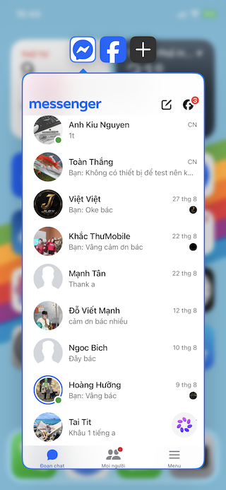
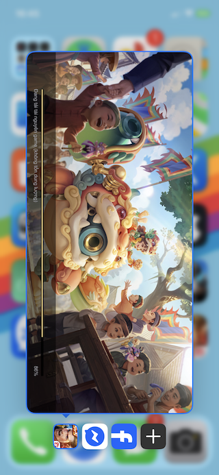
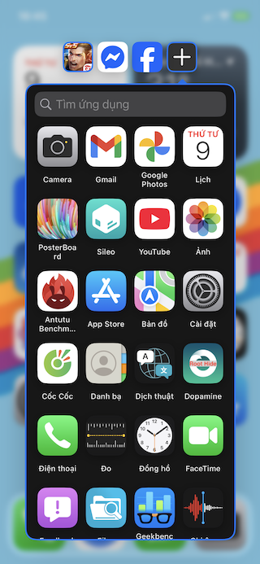
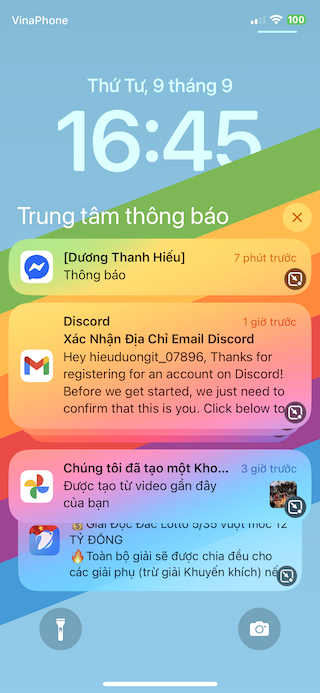
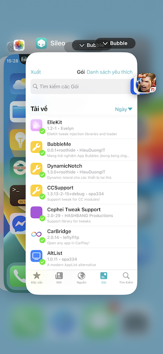

BubbleMe là một tweak mang trải nghiệm App Bubbles (bong bóng ứng dụng) của Android lên iOS 15+.
Chạy tất cả các app dưới dạng bong bóng bằng nhiều cách: menu haptic, menu đa nhiệm, banner thông báo.




